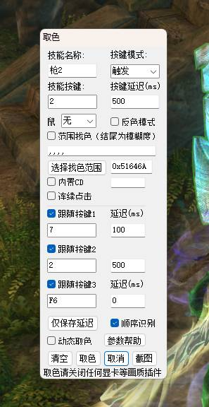
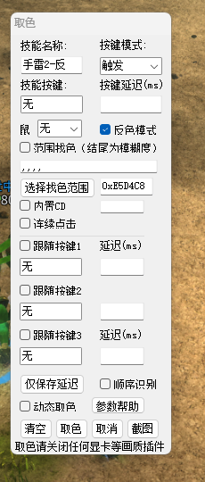
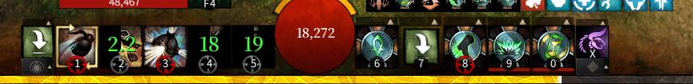

直伤丁真——步枪手雷
第一代版本：
起手，枪3，枪2|枪4，枪2，手雷5，手雷4，手雷2-反=手雷5-黑=手雷4-黑=切回，枪3，技能0，枪5||
起手,F2,0|枪3,3,450|枪2,2,500,7,100,2,500,F6,0,,,,c|枪4,4,450|手雷5,5,500|手雷4,4,500,7,50,4,450,,,,,,c|手雷2-反|手雷5-黑|手雷4-黑|切回,7,50|技能0,0,0|枪5,5,1000,,,,,,,,,,c
BD
第二代修改版本：（最新）
机器人F2，步枪4，步枪3，步枪2|步枪4，超频纹章，步枪2，手雷2-反=手雷4-反=切回步枪，手雷5，手雷4，步枪3，步枪5||
机器人F2,F2,0|步枪4,4,450|步枪3,3,450|步枪2,2,400,7,100,2,200|超频纹章,0,0|手雷2-反|手雷4-反|切回步枪,7,|手雷5,5,450|手雷4,4,500,7,50|步枪5,5,800
完全参照SC
古物：克达之爪
以下为参考部分：
请依据实际使用情况考虑是否去掉步枪5
请根据Boss类型考虑是否留下破蔑技能——如步枪4。（斥力纹章未写入循环）
将两者删除后虽然会降低DPS，但并不会对其余循环造成影响。
我将手雷包设置为了7号键，各位可根据自身情况做出修改替换。
机器人的F1、F2、F3、可为全自动。
手法、基本循环出自：直伤丁真39.9k（步枪，手雷包，削0.7k）_哔哩哔哩_bilibili
因为是全自动的原因，可能会比视频低约2-3K左右。
个人目前12个+13威能灌注，打桩测试下为稳定38K，大哥给面子准时放技能的话为稳定39K-40K。
释放步枪5与不释放步枪5相差仅为1-2K，所以步枪5该删就删。
装备：全身狂战士
符文：超级猎龙
法印：超级勇武、空气。
灌注：12个+13威能灌注（要是有条件可以上满，木桩应该能稳定40K）
古物：潜行者。
改进方向——本套丁真的改进空间有二：
主要为机器人F1、F2、F3的释放顺序、延迟、和技能0（超频纹章）的释放时机。最开始可能会出现超频纹章打断机器人技能的情况。
其次的改进方向为普攻的衔接，实战内可能出现打断普攻的情况。
BUG：偶尔会出现机器人摸鱼（不攻击与释放技能）情况，可以按一下F6或技能键。
如果出现切包后手雷2无法衔接的情况，请考虑延长冷却时间。跟随按键1的位置为手雷包、跟随按键2的位置为手雷2、跟随按键3的位置是命令机器人攻击目标

手雷2-反，请正常取色并勾选反色模式

手雷2-黑、手雷5-黑、手雷4-黑请取色技能冷却时的11点钟至12点钟的黑色区域。

本套丁真可作为日常混事件使用，也可作为10人副本入门学习机制使用。
在删除步枪5后，基本排除了往必死机制上冲的可能性。同时经过目前的测试，未发现位移纹章与技能组出现冲突情况。
评论列表（31）
手雷2-反是哪个技能？
大佬牛逼
手雷5经常不放正常吗
@长腿 手雷2放完立马转步枪了，这是啥原因亚
@长腿 反色没取好
不会 1111啊
@阿斯蒂芬 自己结尾加个普攻，按键设置1
@melis 结尾加普攻之后取色失败,点普攻取色时候屏幕闪一下就没了,点一键取色也是没反应
@时钟 看帮助说明，普攻不用取色
@melis 可以自己重建一个名称 取色普攻就好了 因为工程切包 普攻触发工具包1技能 造成切包不流畅 我直接取色切换武器图标灰色状态 好像效果还不错
@132 是个好办法，灰色刚好是不在包内才普攻
@melis 解决了，普攻设置连点，不取色就可以了，顺带解决了切手雷包卡雷2的问题，那就是单独取色一个雷2，也设置连点，延迟正常，就不会造成进包太快导致不会放雷2导致循环卡住的问题
现在可以打多少K阿
优质内容 给你个大大的赞
机器人的F1、F2、F3、可为全自动 怎么设置
@苍龙 知道了 自动攻击就可以
退出手雷要怎么取色啊 总是不切出去
@D 退出手雷的取色是要综合取色手雷2、手雷4、手雷5的黑色，在判定这三都是黑色后自动切换回步枪。
退出手雷的取色主要是处于手雷包状态下时，手雷包的图标会变为类似切换武器的那个图标。
@查明 我也卡在这个手雷不会切换，综合取色是怎么样操作？第一版是有手雷黑的取色的。第二版这个手雷反转实在没有搞懂？
第一跳36 然后后面可以稳定33，一身加13，食物扳手全吃了。
木桩需要设置全症状，我的一身是粉色（升华）全狂战士。具体的一些内容你可以看看这个大佬的视频：
【激战2 直伤步枪玉偃（丁真）1月16日后dps降到39K】 https://www.bilibili.com/video/BV17gxKzcEfa/?share_source=copy_web&vd_source=4a367f5ff1eb1ea4aa4bcf452e2532f0
请问有什么方法可以让机器人太远时回来吗？我试了范围取色取反色机械天才BUFF，不太行
BUFF试试用截图
楼上的建议可行，截图BUFF后勾选反色。可以达到效果。具体可以看看m佬的教程，里面对这个有进行基础讲解。
@monster026 buff可以找到，但是好像不能范围找图，buff位子变了就找不到了，不知道我操作的对不对，吊大的帮忙试试
@懒猫 识别到BUFF图标有延时 而且这期间BUFF图标位置不固定 可以实现没有BUFF机器人返回 但是机器人攻击会频繁打断 DPS反而会丢很多 不实用
@monster026 实战机器人一技能换成近战攻击，就行了自动贴身
@时钟 看来你机器人1技能从没选过BD3
@132 那我怎么不说BD3会自动贴身呢？
@132 有没有可能是我太了解BD3的实战了，小朋友
工程真好，dps，敏捷，极速 都有。